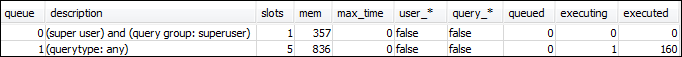
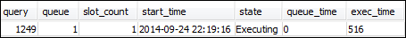

Le traduzioni sono generate tramite traduzione automatica. In caso di conflitto tra il contenuto di una traduzione e la versione originale in Inglese, quest'ultima prevarrà.
Sezione 1: informazioni sul comportamento predefinito di elaborazione delle code
Prima di iniziare a configurare la WLM manuale, può essere utile conoscere il comportamento di default dell'elaborazione delle code in Amazon Redshift. In questa sezione creerai due viste database che restituiscono informazioni da diverse tabelle di sistema. Quindi eseguirai alcune query di prova per vedere come vengono instradate per impostazione predefinita. Per ulteriori informazioni sulle tabelle di sistema, consultare Riferimento di tabelle e viste di sistema.
Fase 1: creazione della vista WLM_QUEUE_STATE_VW
In questa fase creerai una vista denominata WLM_QUEUE_STATE_VW. Questa vista restituisce informazioni dalle tabelle di sistema seguenti.
Utilizzerai questa vista in tutto il tutorial per monitorare ciò che accade alle code dopo avere modificato la configurazione WLM. Nella seguente tabella sono descritti i dati restituiti dalla vista WLM_QUEUE_STATE_VW.
| Colonna | Descrizione |
|---|---|
| coda | Il numero associato alla riga che rappresenta una coda. Il numero di coda determina l'ordine delle code nel database. |
| description | Valore che descrive se la coda è disponibile solo per determinati gruppi di utenti, determinati gruppi di query o per tutti i tipi di query. |
| slots | Il numero di slot assegnate alla coda. |
| mem | La quantità di memoria, espressa in MB per slot, allocata alla coda. |
| max_execution_time | La quantità massima di tempo consentita per l'esecuzione di una query prima che venga terminata. |
| user_* | Valore che indica se è consentito l'utilizzo di caratteri jolly nella configurazione WLM per trovare la corrispondenza con i gruppi di utenti. |
| query_* | Valore che indica se è consentito l'utilizzo di caratteri jolly nella configurazione WLM per trovare la corrispondenza con i gruppi di query. |
| queued | Il numero di query che si trovano nella coda in attesa di essere elaborate. |
| executing | Il numero di query attualmente in esecuzione. |
| executed | Il numero di query che sono state eseguite. |
Per creare la vista WLM_QUEUE_STATE_VW
-
Apri Amazon Redshift RSQL e connettiti al database di esempio TICKIT. Se questo database non è presente, vedi Prerequisiti.
-
Eseguire la query seguente per creare la vista WLM_QUEUE_STATE_VW.
create view WLM_QUEUE_STATE_VW as select (config.service_class-5) as queue , trim (class.condition) as description , config.num_query_tasks as slots , config.query_working_mem as mem , config.max_execution_time as max_time , config.user_group_wild_card as "user_*" , config.query_group_wild_card as "query_*" , state.num_queued_queries queued , state.num_executing_queries executing , state.num_executed_queries executed from STV_WLM_CLASSIFICATION_CONFIG class, STV_WLM_SERVICE_CLASS_CONFIG config, STV_WLM_SERVICE_CLASS_STATE state where class.action_service_class = config.service_class and class.action_service_class = state.service_class and config.service_class > 4 order by config.service_class; -
Eseguire la query seguente per vedere le informazioni incluse nella vista.
select * from wlm_queue_state_vw;Di seguito è riportato un risultato di esempio.

Fase 2: creazione della vista WLM_QUERY_STATE_VW
In questa fase creerai una vista denominata WLM_QUERY_STATE_VW. Questa vista restituisce informazioni dalla tabella di sistema STV_WLM_QUERY_STATE.
Utilizzerai questa vista in tutto il tutorial per monitorare le query in esecuzione. Nella seguente tabella sono descritti i dati restituiti dalla vista WLM_QUERY_STATE_VW.
| Colonna | Descrizione |
|---|---|
| query | L'ID di query. |
| coda | Il numero della coda. |
| slot_count | Il numero di slot assegnate alla query. |
| start_time | L'ora in cui è stata avviata la query. |
| state | Lo stato della query, ad esempio in esecuzione. |
| queue_time | Numero totale di microsecondi che la query ha trascorso nella coda. |
| exec_time | Numero di microsecondi durante i quali la query è stata in esecuzione. |
Per creare la vista WLM_QUERY_STATE_VW
-
In RSQL esegui la query seguente per creare la vista WLM_QUERY_STATE_VW.
create view WLM_QUERY_STATE_VW as select query, (service_class-5) as queue, slot_count, trim(wlm_start_time) as start_time, trim(state) as state, trim(queue_time) as queue_time, trim(exec_time) as exec_time from stv_wlm_query_state; -
Eseguire la query seguente per vedere le informazioni incluse nella vista.
select * from wlm_query_state_vw;Di seguito è riportato un risultato di esempio.

Fase 3: esecuzione delle query di test
In questa fase eseguirai query da più connessioni in RSQL ed esaminerai le tabelle di sistema per stabilire il modo in cui le query sono state instradate per l'elaborazione.
Per questo passaggio, è necessario che siano aperte due finestre RSQL:
-
Nella finestra RSQL 1 eseguirai le query che monitorano lo stato delle code e le query che utilizzano le viste già create in questo tutorial.
-
Nella finestra RSQL 2 eseguirai le query di lunga durata per modificare i risultati trovati nella finestra RSQL 1.
Per eseguire le query di test
-
Apri due finestre RSQL. Se è già aperta una finestra, sarà sufficiente aprire la seconda. È possibile utilizzare lo stesso account utente per entrambe le connessioni.
-
Nella finestra RSQL 1 esegui la query seguente.
select * from wlm_query_state_vw;Di seguito è riportato un risultato di esempio.

Questa query restituisce un risultato autoreferenziale. La query attualmente in esecuzione è l'istruzione SELECT da questa vista. Una query su questa vista restituisce sempre almeno un risultato, che si deve confrontare con quello che si ottiene avviando la query di lunga durata al passaggio successivo.
-
Nella finestra RSQL 2 esegui una query dal database TICKIT di esempio. Questa query deve essere eseguita per circa un minuto, in modo che sia possibile esplorare i risultati della vista WLM_QUEUE_STATE_VW e la vista WLM_QUERY_STATE_VW creata precedentemente. In alcuni casi, potresti osservare che la query non viene eseguita abbastanza a lungo per interrogare entrambe le viste. In questi casi, puoi aumentare il valore del filtro su
l.listidaffinché la query venga eseguita più a lungo.Nota
Per ridurre il tempo di esecuzione delle query e migliorare le prestazioni del sistema, Amazon Redshift memorizza i risultati di certi tipi di query nella memoria cache del nodo principale. Se è abilitato il caching dei risultati, l'esecuzione delle query successive è moto più rapida. Per evitare che la query venga eseguita troppo rapidamente, è possibile disabilitare il caching dei risultati per la sessione corrente.
Per disattivare il caching dei risultati per la sessione corrente, è possibile impostare il parametro enable_result_cache_for_session su
offcome mostrato di seguito.set enable_result_cache_for_session to off;Nella finestra RSQL 2 esegui la query seguente.
select avg(l.priceperticket*s.qtysold) from listing l, sales s where l.listid < 100000; -
Nella finestra RSQL 1, esegui una query WLM_QUEUE_STATE_VW e WLM_QUERY_STATE_VW e confronta i risultati con quelli precedenti.
select * from wlm_queue_state_vw; select * from wlm_query_state_vw;Di seguito sono riportati i risultati di esempio.


Di seguito vengono illustrate le differenze tra le query precedenti e i risultati di questa fase:
-
Ora in WLM_QUERY_STATE_VW sono presenti due righe. Un risultato è la query autoreferenziale per l'esecuzione di un'operazione SELECT in questa vista. Il secondo risultato è la query di lunga durata della fase precedente.
-
Il valore della colonna di esecuzione in WLM_QUEUE_STATE_VW è aumentato da 1 a 2. La voce di questa colonna indica che nella coda sono in esecuzione due query.
-
Il valore della colonna eseguita aumenta ogni volta che si esegue una query nella coda.
La vista WLM_QUEUE_STATE_VW è utile per ottenere una vista generale delle code e per conoscere il numero di query in elaborazione in ogni coda. La vista WLM_QUERY_STATE_VW è utile per ottenere una vista più dettagliata delle singole query attualmente in esecuzione.